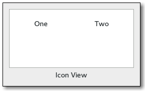

Gtk.IconView
Example
Methods
| Inherited: | Gtk.Container (27), Gtk.Widget (256), GObject.Object (33), Gtk.Buildable (10), Gtk.CellLayout (9), Gtk.Scrollable (8) |
|---|
Virtual Methods
| Inherited: | Gtk.Container (10), Gtk.Widget (82), GObject.Object (7), Gtk.Buildable (10), Gtk.CellLayout (9) |
|---|
| do_activate_cursor_item() | |
| do_item_activated(path) | |
| do_move_cursor(step, count) | |
| do_select_all() | |
| do_select_cursor_item() | |
| do_selection_changed() | |
| do_toggle_cursor_item() | |
| do_unselect_all() |
Properties
| Inherited: | Gtk.Container (3), Gtk.Widget (38), Gtk.Scrollable (4) |
|---|
| Name | Type | Flags | Short Description |
|---|---|---|---|
| activate-on-single-click | bool | r/w | Activate row on a single click |
| cell-area | Gtk.CellArea | r/w | The Gtk.CellArea used to layout cells |
| column-spacing | int | r/w | Space which is inserted between grid columns |
| columns | int | r/w | Number of columns to display |
| item-orientation | Gtk.Orientation | r/w | How the text and icon of each item are positioned relative to each other |
| item-padding | int | r/w | Padding around icon view items |
| item-width | int | r/w | The width used for each item |
| markup-column | int | r/w | Model column used to retrieve the text if using Pango markup |
| model | Gtk.TreeModel | r/w | The model for the icon view |
| pixbuf-column | int | r/w | Model column used to retrieve the icon pixbuf from |
| reorderable | bool | r/w | View is reorderable |
| row-spacing | int | r/w | Space which is inserted between grid rows |
| selection-mode | Gtk.SelectionMode | r/w | The selection mode |
| spacing | int | r/w | Space which is inserted between cells of an item |
| text-column | int | r/w | Model column used to retrieve the text from |
| tooltip-column | int | r/w | The column in the model containing the tooltip texts for the items |
Style Properties
| Inherited: | Gtk.Widget (17) |
|---|
| Name | Type | Default | Flags | Short Description |
|---|---|---|---|---|
| selection-box-alpha | '@' | r | Opacity of the selection box | |
| selection-box-color | Gdk.Color | None | r | Color of the selection box |
Signals
| Inherited: | Gtk.Container (4), Gtk.Widget (69), GObject.Object (1) |
|---|
| Name | Short Description |
|---|---|
| activate-cursor-item | A [keybinding signal][GtkBindingSignal] which gets emitted when the user activates the currently focused item. |
| item-activated | The ::item-activated signal is emitted when the method Gtk.IconView.item_activated () is called, when the user double clicks an item with the “activate-on-single-click” property set to False, or when the user single clicks an item when the “activate-on-single-click” property set to True. |
| move-cursor | The ::move-cursor signal is a [keybinding signal][GtkBindingSignal] which gets emitted when the user initiates a cursor movement. |
| select-all | A [keybinding signal][GtkBindingSignal] which gets emitted when the user selects all items. |
| select-cursor-item | A [keybinding signal][GtkBindingSignal] which gets emitted when the user selects the item that is currently focused. |
| selection-changed | The ::selection-changed signal is emitted when the selection (i.e. |
| toggle-cursor-item | A [keybinding signal][GtkBindingSignal] which gets emitted when the user toggles whether the currently focused item is selected or not. |
| unselect-all | A [keybinding signal][GtkBindingSignal] which gets emitted when the user unselects all items. |
Fields
| Inherited: | Gtk.Container (1), Gtk.Widget (1), GObject.InitiallyUnowned (3), GObject.Object (3) |
|---|
| Name | Type | Access | Description |
|---|---|---|---|
| parent | Gtk.Container | r |
Class Details
- class Gtk.IconView(model=None, **kwds)
Bases: Gtk.Container, Gtk.CellLayout, Gtk.Scrollable
Gtk.IconView provides an alternative view on a Gtk.TreeModel. It displays the model as a grid of icons with labels. Like Gtk.TreeView, it allows to select one or multiple items (depending on the selection mode, see Gtk.IconView.set_selection_mode ()). In addition to selection with the arrow keys, Gtk.IconView supports rubberband selection, which is controlled by dragging the pointer.
Note that if the tree model is backed by an actual tree store (as opposed to a flat list where the mapping to icons is obvious), Gtk.IconView will only display the first level of the tree and ignore the tree’s branches.
- static new()
Returns: A newly created Gtk.IconView widget Return type: Gtk.Widget Creates a new Gtk.IconView widget
New in version 2.6.
- static new_with_area(area)
Parameters: area (Gtk.CellArea) – the Gtk.CellArea to use to layout cells Returns: A newly created Gtk.IconView widget Return type: Gtk.Widget Creates a new Gtk.IconView widget using the specified area to layout cells inside the icons.
New in version 3.0.
- static new_with_model(model)
Parameters: model (Gtk.TreeModel) – The model. Returns: A newly created Gtk.IconView widget. Return type: Gtk.Widget Creates a new Gtk.IconView widget with the model model.
New in version 2.6.
- convert_widget_to_bin_window_coords(wx, wy)
Parameters: Returns: bx: return location for bin_window X coordinate by: return location for bin_window Y coordinate Return type: Converts widget coordinates to coordinates for the bin_window, as expected by e.g. Gtk.IconView.get_path_at_pos ().
New in version 2.12.
- create_drag_icon(path)
Parameters: path (Gtk.TreePath) – a Gtk.TreePath in icon_view Returns: a newly-allocated surface of the drag icon. Return type: cairo.Surface Creates a cairo.Surface representation of the item at path. This image is used for a drag icon.
New in version 2.8.
- enable_model_drag_dest(targets, actions)
Parameters: - targets ([Gtk.TargetEntry]) – the table of targets that the drag will support
- actions (Gdk.DragAction) – the bitmask of possible actions for a drag to this widget
Turns icon_view into a drop destination for automatic DND. Calling this method sets Gtk.IconView :reorderable to False.
New in version 2.8.
- enable_model_drag_source(start_button_mask, targets, actions)
Parameters: - start_button_mask (Gdk.ModifierType) – Mask of allowed buttons to start drag
- targets ([Gtk.TargetEntry]) – the table of targets that the drag will support
- actions (Gdk.DragAction) – the bitmask of possible actions for a drag from this widget
Turns icon_view into a drag source for automatic DND. Calling this method sets Gtk.IconView :reorderable to False.
New in version 2.8.
- get_activate_on_single_click()
Returns: True if item-activated will be emitted on a single click Return type: bool Gets the setting set by Gtk.IconView.set_activate_on_single_click ().
New in version 3.8.
- get_cell_rect(path, cell)
Parameters: - path (Gtk.TreePath) – a Gtk.TreePath
- cell (Gtk.CellRenderer or None) – a Gtk.CellRenderer or None
Returns: False if there is no such item, True otherwise
rect: rectangle to fill with cell rect Return type: (bool, rect: cairo.RectangleInt)
Fills the bounding rectangle in widget coordinates for the cell specified by path and cell. If cell is None the main cell area is used.
This function is only valid if icon_view is realized.
New in version 3.6.
- get_column_spacing()
Returns: the space between columns Return type: int Returns the value of the ::column-spacing property.
New in version 2.6.
- get_columns()
Returns: the number of columns, or -1 Return type: int Returns the value of the ::columns property.
New in version 2.6.
- get_cursor()
Returns: True if the cursor is set. path: Return location for the current cursor path, or None cell: Return location the current focus cell, or None Return type: (bool, path: Gtk.TreePath, cell: Gtk.CellRenderer) Fills in path and cell with the current cursor path and cell. If the cursor isn’t currently set, then path will be None. If no cell currently has focus, then cell will be None.
The returned Gtk.TreePath must be freed with Gtk.TreePath.free ().
New in version 2.8.
- get_dest_item_at_pos(drag_x, drag_y)
Parameters: Returns: whether there is an item at the given position.
path: Return location for the path of the item, or None. pos: Return location for the drop position, or None Return type: (bool, path: Gtk.TreePath, pos: Gtk.IconViewDropPosition)
Determines the destination item for a given position.
New in version 2.8.
- get_drag_dest_item()
Returns: path: Return location for the path of the highlighted item, or None. pos: Return location for the drop position, or None Return type: (path: Gtk.TreePath, pos: Gtk.IconViewDropPosition) Gets information about the item that is highlighted for feedback.
New in version 2.8.
- get_item_at_pos(x, y)
Parameters: Returns: True if an item exists at the specified position
path: Return location for the path, or None cell: Return location for the renderer responsible for the cell at (x, y ), or None Return type: (bool, path: Gtk.TreePath, cell: Gtk.CellRenderer)
Finds the path at the point (x, y ), relative to bin_window coordinates. In contrast to Gtk.IconView.get_path_at_pos (), this function also obtains the cell at the specified position. The returned path should be freed with Gtk.TreePath.free (). See Gtk.IconView.convert_widget_to_bin_window_coords () for converting widget coordinates to bin_window coordinates.
New in version 2.8.
- get_item_column(path)
Parameters: path (Gtk.TreePath) – the Gtk.TreePath of the item Returns: The column in which the item is displayed Return type: int Gets the column in which the item path is currently displayed. Column numbers start at 0.
New in version 2.22.
- get_item_orientation()
Returns: the relative position of texts and icons Return type: Gtk.Orientation Returns the value of the ::item-orientation property which determines whether the labels are drawn beside the icons instead of below.
New in version 2.6.
- get_item_padding()
Returns: the padding around items Return type: int Returns the value of the ::item-padding property.
New in version 2.18.
- get_item_row(path)
Parameters: path (Gtk.TreePath) – the Gtk.TreePath of the item Returns: The row in which the item is displayed Return type: int Gets the row in which the item path is currently displayed. Row numbers start at 0.
New in version 2.22.
- get_item_width()
Returns: the width of a single item, or -1 Return type: int Returns the value of the ::item-width property.
New in version 2.6.
- get_margin()
Returns: the space at the borders Return type: int Returns the value of the ::margin property.
New in version 2.6.
- get_markup_column()
Returns: the markup column, or -1 if it’s unset. Return type: int Returns the column with markup text for icon_view.
New in version 2.6.
- get_model()
Returns: A Gtk.TreeModel, or None if none is currently being used. Return type: Gtk.TreeModel Returns the model the Gtk.IconView is based on. Returns None if the model is unset.
New in version 2.6.
- get_path_at_pos(x, y)
Parameters: Returns: The Gtk.TreePath corresponding to the icon or None if no icon exists at that position.
Return type: Finds the path at the point (x, y ), relative to bin_window coordinates. See Gtk.IconView.get_item_at_pos (), if you are also interested in the cell at the specified position. See Gtk.IconView.convert_widget_to_bin_window_coords () for converting widget coordinates to bin_window coordinates.
New in version 2.6.
- get_pixbuf_column()
Returns: the pixbuf column, or -1 if it’s unset. Return type: int Returns the column with pixbufs for icon_view.
New in version 2.6.
- get_reorderable()
Returns: True if the list can be reordered. Return type: bool Retrieves whether the user can reorder the list via drag-and-drop. See Gtk.IconView.set_reorderable ().
New in version 2.8.
- get_row_spacing()
Returns: the space between rows Return type: int Returns the value of the ::row-spacing property.
New in version 2.6.
- get_selected_items()
Returns: A GLib.List containing a Gtk.TreePath for each selected row. Return type: [Gtk.TreePath] Creates a list of paths of all selected items. Additionally, if you are planning on modifying the model after calling this function, you may want to convert the returned list into a list of Gtk.TreeRowReferences. To do this, you can use Gtk.TreeRowReference.new ().
To free the return value, use:
<!-- language="C" --> g_list_free_full (list, (GDestroyNotify) gtk_tree_path_free);
New in version 2.6.
- get_selection_mode()
Returns: the current selection mode Return type: Gtk.SelectionMode Gets the selection mode of the icon_view.
New in version 2.6.
- get_spacing()
Returns: the space between cells Return type: int Returns the value of the ::spacing property.
New in version 2.6.
- get_text_column()
Returns: the text column, or -1 if it’s unset. Return type: int Returns the column with text for icon_view.
New in version 2.6.
- get_tooltip_column()
Returns: the index of the tooltip column that is currently being used, or -1 if this is disabled. Return type: int Returns the column of icon_view ’s model which is being used for displaying tooltips on icon_view ’s rows.
New in version 2.12.
- get_tooltip_context(x, y, keyboard_tip)
Parameters: Returns: whether or not the given tooltip context points to a item
x: the x coordinate (relative to widget coordinates) y: the y coordinate (relative to widget coordinates) model: a pointer to receive a Gtk.TreeModel or None path: a pointer to receive a Gtk.TreePath or None iter: a pointer to receive a Gtk.TreeIter or None Return type: (bool, x: int, y: int, model: Gtk.TreeModel, path: Gtk.TreePath, iter: Gtk.TreeIter)
This function is supposed to be used in a Gtk.Widget ::query-tooltip signal handler for Gtk.IconView. The x, y and keyboard_tip values which are received in the signal handler, should be passed to this function without modification.
The return value indicates whether there is an icon view item at the given coordinates (True ) or not (False ) for mouse tooltips. For keyboard tooltips the item returned will be the cursor item. When True, then any of model, path and iter which have been provided will be set to point to that row and the corresponding model. x and y will always be converted to be relative to icon_view ’s bin_window if keyboard_tooltip is False.
New in version 2.12.
- get_visible_range()
Returns: True, if valid paths were placed in start_path and end_path start_path: Return location for start of region, or None end_path: Return location for end of region, or None Return type: (bool, start_path: Gtk.TreePath, end_path: Gtk.TreePath) Sets start_path and end_path to be the first and last visible path. Note that there may be invisible paths in between.
Both paths should be freed with Gtk.TreePath.free () after use.
New in version 2.8.
- item_activated(path)
Parameters: path (Gtk.TreePath) – The Gtk.TreePath to be activated Activates the item determined by path.
New in version 2.6.
- path_is_selected(path)
Parameters: path (Gtk.TreePath) – A Gtk.TreePath to check selection on. Returns: True if path is selected. Return type: bool Returns True if the icon pointed to by path is currently selected. If path does not point to a valid location, False is returned.
New in version 2.6.
- scroll_to_path(path, use_align, row_align, col_align)
Parameters: - path (Gtk.TreePath) – The path of the item to move to.
- use_align (bool) – whether to use alignment arguments, or False.
- row_align (float) – The vertical alignment of the item specified by path.
- col_align (float) – The horizontal alignment of the item specified by path.
Moves the alignments of icon_view to the position specified by path. row_align determines where the row is placed, and col_align determines where column is placed. Both are expected to be between 0.0 and 1.0. 0.0 means left/top alignment, 1.0 means right/bottom alignment, 0.5 means center.
If use_align is False, then the alignment arguments are ignored, and the tree does the minimum amount of work to scroll the item onto the screen. This means that the item will be scrolled to the edge closest to its current position. If the item is currently visible on the screen, nothing is done.
This function only works if the model is set, and path is a valid row on the model. If the model changes before the icon_view is realized, the centered path will be modified to reflect this change.
New in version 2.8.
- select_all()
Selects all the icons. icon_view must has its selection mode set to Gtk.SelectionMode.MULTIPLE.
New in version 2.6.
- select_path(path)
Parameters: path (Gtk.TreePath) – The Gtk.TreePath to be selected. Selects the row at path.
New in version 2.6.
- selected_foreach(func, *data)
Parameters: - func (Gtk.IconViewForeachFunc) – The function to call for each selected icon.
- data (object) – User data to pass to the function.
Calls a function for each selected icon. Note that the model or selection cannot be modified from within this function.
New in version 2.6.
- set_activate_on_single_click(single)
Parameters: single (bool) – True to emit item-activated on a single click Causes the Gtk.IconView ::item-activated signal to be emitted on a single click instead of a double click.
New in version 3.8.
- set_column_spacing(column_spacing)
Parameters: column_spacing (int) – the column spacing Sets the ::column-spacing property which specifies the space which is inserted between the columns of the icon view.
New in version 2.6.
- set_columns(columns)
Parameters: columns (int) – the number of columns Sets the ::columns property which determines in how many columns the icons are arranged. If columns is -1, the number of columns will be chosen automatically to fill the available area.
New in version 2.6.
- set_cursor(path, cell, start_editing)
Parameters: - path (Gtk.TreePath) – A Gtk.TreePath
- cell (Gtk.CellRenderer or None) – One of the cell renderers of icon_view, or None
- start_editing (bool) – True if the specified cell should start being edited.
Sets the current keyboard focus to be at path, and selects it. This is useful when you want to focus the user’s attention on a particular item. If cell is not None, then focus is given to the cell specified by it. Additionally, if start_editing is True, then editing should be started in the specified cell.
This function is often followed by `gtk_widget_grab_focus (icon_view)` in order to give keyboard focus to the widget. Please note that editing can only happen when the widget is realized.
New in version 2.8.
- set_drag_dest_item(path, pos)
Parameters: - path (Gtk.TreePath or None) – The path of the item to highlight, or None.
- pos (Gtk.IconViewDropPosition) – Specifies where to drop, relative to the item
Sets the item that is highlighted for feedback.
New in version 2.8.
- set_item_orientation(orientation)
Parameters: orientation (Gtk.Orientation) – the relative position of texts and icons Sets the ::item-orientation property which determines whether the labels are drawn beside the icons instead of below.
New in version 2.6.
- set_item_padding(item_padding)
Parameters: item_padding (int) – the item padding Sets the Gtk.IconView :item-padding property which specifies the padding around each of the icon view’s items.
New in version 2.18.
- set_item_width(item_width)
Parameters: item_width (int) – the width for each item Sets the ::item-width property which specifies the width to use for each item. If it is set to -1, the icon view will automatically determine a suitable item size.
New in version 2.6.
- set_margin(margin)
Parameters: margin (int) – the margin Sets the ::margin property which specifies the space which is inserted at the top, bottom, left and right of the icon view.
New in version 2.6.
- set_markup_column(column)
Parameters: column (int) – A column in the currently used model, or -1 to display no text Sets the column with markup information for icon_view to be column. The markup column must be of type GObject.TYPE_STRING. If the markup column is set to something, it overrides the text column set by Gtk.IconView.set_text_column ().
New in version 2.6.
- set_model(model)
Parameters: model (Gtk.TreeModel or None) – The model. Sets the model for a Gtk.IconView. If the icon_view already has a model set, it will remove it before setting the new model. If model is None, then it will unset the old model.
New in version 2.6.
- set_pixbuf_column(column)
Parameters: column (int) – A column in the currently used model, or -1 to disable Sets the column with pixbufs for icon_view to be column. The pixbuf column must be of type #GDK_TYPE_PIXBUF
New in version 2.6.
- set_reorderable(reorderable)
Parameters: reorderable (bool) – True, if the list of items can be reordered. This function is a convenience function to allow you to reorder models that support the #GtkTreeDragSourceIface and the #GtkTreeDragDestIface. Both Gtk.TreeStore and Gtk.ListStore support these. If reorderable is True, then the user can reorder the model by dragging and dropping rows. The developer can listen to these changes by connecting to the model’s row_inserted and row_deleted signals. The reordering is implemented by setting up the icon view as a drag source and destination. Therefore, drag and drop can not be used in a reorderable view for any other purpose.
This function does not give you any degree of control over the order – any reordering is allowed. If more control is needed, you should probably handle drag and drop manually.
New in version 2.8.
- set_row_spacing(row_spacing)
Parameters: row_spacing (int) – the row spacing Sets the ::row-spacing property which specifies the space which is inserted between the rows of the icon view.
New in version 2.6.
- set_selection_mode(mode)
Parameters: mode (Gtk.SelectionMode) – The selection mode Sets the selection mode of the icon_view.
New in version 2.6.
- set_spacing(spacing)
Parameters: spacing (int) – the spacing Sets the ::spacing property which specifies the space which is inserted between the cells (i.e. the icon and the text) of an item.
New in version 2.6.
- set_text_column(column)
Parameters: column (int) – A column in the currently used model, or -1 to display no text Sets the column with text for icon_view to be column. The text column must be of type GObject.TYPE_STRING.
New in version 2.6.
- set_tooltip_cell(tooltip, path, cell)
Parameters: - tooltip (Gtk.Tooltip) – a Gtk.Tooltip
- path (Gtk.TreePath) – a Gtk.TreePath
- cell (Gtk.CellRenderer or None) – a Gtk.CellRenderer or None
Sets the tip area of tooltip to the area which cell occupies in the item pointed to by path. See also Gtk.Tooltip.set_tip_area ().
See also Gtk.IconView.set_tooltip_column () for a simpler alternative.
New in version 2.12.
- set_tooltip_column(column)
Parameters: column (int) – an integer, which is a valid column number for icon_view ’s model If you only plan to have simple (text-only) tooltips on full items, you can use this function to have Gtk.IconView handle these automatically for you. column should be set to the column in icon_view ’s model containing the tooltip texts, or -1 to disable this feature.
When enabled, Gtk.Widget :has-tooltip will be set to True and icon_view will connect a Gtk.Widget ::query-tooltip signal handler.
Note that the signal handler sets the text with Gtk.Tooltip.set_markup (), so &, <, etc have to be escaped in the text.
New in version 2.12.
- set_tooltip_item(tooltip, path)
Parameters: - tooltip (Gtk.Tooltip) – a Gtk.Tooltip
- path (Gtk.TreePath) – a Gtk.TreePath
Sets the tip area of tooltip to be the area covered by the item at path. See also Gtk.IconView.set_tooltip_column () for a simpler alternative. See also Gtk.Tooltip.set_tip_area ().
New in version 2.12.
- unselect_all()
Unselects all the icons.
New in version 2.6.
- unselect_path(path)
Parameters: path (Gtk.TreePath) – The Gtk.TreePath to be unselected. Unselects the row at path.
New in version 2.6.
- unset_model_drag_dest()
Undoes the effect of Gtk.IconView.enable_model_drag_dest (). Calling this method sets Gtk.IconView :reorderable to False.
New in version 2.8.
- unset_model_drag_source()
Undoes the effect of Gtk.IconView.enable_model_drag_source (). Calling this method sets Gtk.IconView :reorderable to False.
New in version 2.8.
- do_activate_cursor_item()
Type: virtual Return type: bool
- do_item_activated(path)
Type: virtual Parameters: path (Gtk.TreePath) – The Gtk.TreePath to be activated Activates the item determined by path.
New in version 2.6.
- do_move_cursor(step, count)
Type: virtual
Parameters: - step (Gtk.MovementStep) –
- count (int) –
Return type:
- do_select_all()
Type: virtual Selects all the icons. icon_view must has its selection mode set to Gtk.SelectionMode.MULTIPLE.
New in version 2.6.
- do_select_cursor_item()
Type: virtual
- do_selection_changed()
Type: virtual
- do_toggle_cursor_item()
Type: virtual
- do_unselect_all()
Type: virtual Unselects all the icons.
New in version 2.6.
Signal Details
- Gtk.IconView.signals.activate_cursor_item(icon_view)
Signal Name: activate-cursor-item Flags: ACTION, RUN_LAST Parameters: icon_view (Gtk.IconView) – The object which received the signal Return type: bool A [keybinding signal][GtkBindingSignal] which gets emitted when the user activates the currently focused item.
Applications should not connect to it, but may emit it with GObject.signal_emit_by_name () if they need to control activation programmatically.
The default bindings for this signal are Space, Return and Enter.
- Gtk.IconView.signals.item_activated(icon_view, path)
Signal Name: item-activated
Flags: Parameters: - icon_view (Gtk.IconView) – The object which received the signal
- path (Gtk.TreePath) – the Gtk.TreePath for the activated item
The ::item-activated signal is emitted when the method Gtk.IconView.item_activated () is called, when the user double clicks an item with the “activate-on-single-click” property set to False, or when the user single clicks an item when the “activate-on-single-click” property set to True. It is also emitted when a non-editable item is selected and one of the keys: Space, Return or Enter is pressed.
- Gtk.IconView.signals.move_cursor(icon_view, step, count)
Signal Name: move-cursor
Flags: Parameters: - icon_view (Gtk.IconView) – The object which received the signal
- step (Gtk.MovementStep) – the granularity of the move, as a Gtk.MovementStep
- count (int) – the number of step units to move
Return type: The ::move-cursor signal is a [keybinding signal][GtkBindingSignal] which gets emitted when the user initiates a cursor movement.
Applications should not connect to it, but may emit it with GObject.signal_emit_by_name () if they need to control the cursor programmatically.
The default bindings for this signal include - Arrow keys which move by individual steps - Home/End keys which move to the first/last item - PageUp/PageDown which move by “pages” All of these will extend the selection when combined with the Shift modifier.
- Gtk.IconView.signals.select_all(icon_view)
Signal Name: select-all Flags: ACTION, RUN_LAST Parameters: icon_view (Gtk.IconView) – The object which received the signal A [keybinding signal][GtkBindingSignal] which gets emitted when the user selects all items.
Applications should not connect to it, but may emit it with GObject.signal_emit_by_name () if they need to control selection programmatically.
The default binding for this signal is Ctrl-a.
- Gtk.IconView.signals.select_cursor_item(icon_view)
Signal Name: select-cursor-item Flags: ACTION, RUN_LAST Parameters: icon_view (Gtk.IconView) – The object which received the signal A [keybinding signal][GtkBindingSignal] which gets emitted when the user selects the item that is currently focused.
Applications should not connect to it, but may emit it with GObject.signal_emit_by_name () if they need to control selection programmatically.
There is no default binding for this signal.
- Gtk.IconView.signals.selection_changed(icon_view)
Signal Name: selection-changed Flags: RUN_FIRST Parameters: icon_view (Gtk.IconView) – The object which received the signal The ::selection-changed signal is emitted when the selection (i.e. the set of selected items) changes.
- Gtk.IconView.signals.toggle_cursor_item(icon_view)
Signal Name: toggle-cursor-item Flags: ACTION, RUN_LAST Parameters: icon_view (Gtk.IconView) – The object which received the signal A [keybinding signal][GtkBindingSignal] which gets emitted when the user toggles whether the currently focused item is selected or not. The exact effect of this depend on the selection mode.
Applications should not connect to it, but may emit it with GObject.signal_emit_by_name () if they need to control selection programmatically.
There is no default binding for this signal is Ctrl-Space.
- Gtk.IconView.signals.unselect_all(icon_view)
Signal Name: unselect-all Flags: ACTION, RUN_LAST Parameters: icon_view (Gtk.IconView) – The object which received the signal A [keybinding signal][GtkBindingSignal] which gets emitted when the user unselects all items.
Applications should not connect to it, but may emit it with GObject.signal_emit_by_name () if they need to control selection programmatically.
The default binding for this signal is Ctrl-Shift-a.
Property Details
- Gtk.IconView.props.activate_on_single_click
Name: activate-on-single-click Type: bool Default Value: False Flags: r/w The activate-on-single-click property specifies whether the “item-activated” signal will be emitted after a single click.
New in version 3.8.
- Gtk.IconView.props.cell_area
Name: cell-area Type: Gtk.CellArea Default Value: None Flags: r/w The Gtk.CellArea used to layout cell renderers for this view.
If no area is specified when creating the icon view with Gtk.IconView.new_with_area () a Gtk.CellAreaBox will be used.
New in version 3.0.
- Gtk.IconView.props.column_spacing
Name: column-spacing Type: int Default Value: 6 Flags: r/w The column-spacing property specifies the space which is inserted between the columns of the icon view.
New in version 2.6.
- Gtk.IconView.props.columns
Name: columns Type: int Default Value: -1 Flags: r/w The columns property contains the number of the columns in which the items should be displayed. If it is -1, the number of columns will be chosen automatically to fill the available area.
New in version 2.6.
- Gtk.IconView.props.item_orientation
Name: item-orientation Type: Gtk.Orientation Default Value: Gtk.Orientation.VERTICAL Flags: r/w The item-orientation property specifies how the cells (i.e. the icon and the text) of the item are positioned relative to each other.
New in version 2.6.
- Gtk.IconView.props.item_padding
Name: item-padding Type: int Default Value: 6 Flags: r/w The item-padding property specifies the padding around each of the icon view’s item.
New in version 2.18.
- Gtk.IconView.props.item_width
Name: item-width Type: int Default Value: -1 Flags: r/w The item-width property specifies the width to use for each item. If it is set to -1, the icon view will automatically determine a suitable item size.
New in version 2.6.
- Gtk.IconView.props.markup_column
Name: markup-column Type: int Default Value: -1 Flags: r/w The ::markup-column property contains the number of the model column containing markup information to be displayed. The markup column must be of type GObject.TYPE_STRING. If this property and the :text-column property are both set to column numbers, it overrides the text column. If both are set to -1, no texts are displayed.
New in version 2.6.
- Gtk.IconView.props.model
Name: model Type: Gtk.TreeModel Default Value: None Flags: r/w The model for the icon view
- Gtk.IconView.props.pixbuf_column
Name: pixbuf-column Type: int Default Value: -1 Flags: r/w The ::pixbuf-column property contains the number of the model column containing the pixbufs which are displayed. The pixbuf column must be of type #GDK_TYPE_PIXBUF. Setting this property to -1 turns off the display of pixbufs.
New in version 2.6.
- Gtk.IconView.props.reorderable
Name: reorderable Type: bool Default Value: False Flags: r/w The reorderable property specifies if the items can be reordered by DND.
New in version 2.8.
- Gtk.IconView.props.row_spacing
Name: row-spacing Type: int Default Value: 6 Flags: r/w The row-spacing property specifies the space which is inserted between the rows of the icon view.
New in version 2.6.
- Gtk.IconView.props.selection_mode
Name: selection-mode Type: Gtk.SelectionMode Default Value: Gtk.SelectionMode.SINGLE Flags: r/w The ::selection-mode property specifies the selection mode of icon view. If the mode is Gtk.SelectionMode.MULTIPLE, rubberband selection is enabled, for the other modes, only keyboard selection is possible.
New in version 2.6.
- Gtk.IconView.props.spacing
Name: spacing Type: int Default Value: 0 Flags: r/w The spacing property specifies the space which is inserted between the cells (i.e. the icon and the text) of an item.
New in version 2.6.
- Gtk.IconView.props.text_column
Name: text-column Type: int Default Value: -1 Flags: r/w The ::text-column property contains the number of the model column containing the texts which are displayed. The text column must be of type GObject.TYPE_STRING. If this property and the :markup-column property are both set to -1, no texts are displayed.
New in version 2.6.
- Gtk.IconView.props.tooltip_column
Name: tooltip-column Type: int Default Value: -1 Flags: r/w The column in the model containing the tooltip texts for the items